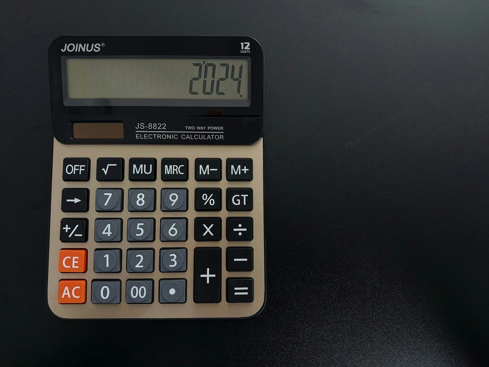
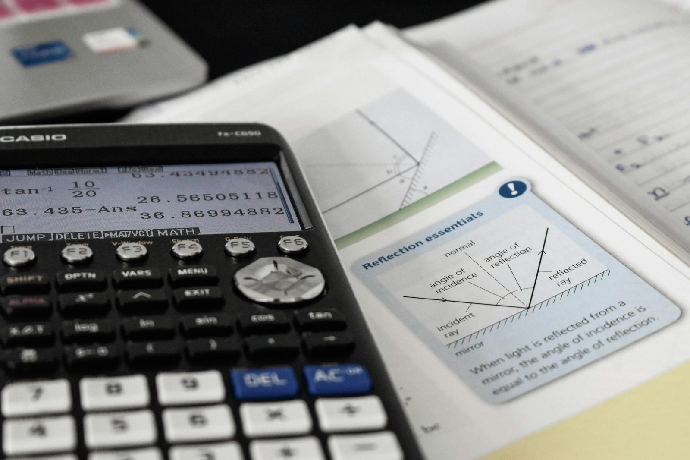
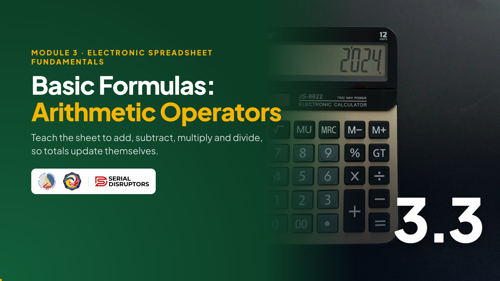

Module 3 · Electronic Spreadsheet Fundamentals
Teach the sheet to add, subtract, multiply and divide, so totals update themselves and never need retyping.

This is the topic where the spreadsheet starts to earn its keep. Open your Lab 3 inventory: column E, Total Cost, is formatted in pesos but still empty.
In the next 50 minutes we fill it with formulas, not typed numbers. Lab 3 checks this directly: the checker clicks your total cells and expects to see a formula in the formula bar. Keep your calculator in the drawer today; the sheet is your calculator now.
Warm-up · mental math in the chat
Type your answer in the chat. First correct answer wins bragging rights.
Now do the same for all 8 items in the inventory, without mistakes.
The supplier raises the A4 price to ₱255. Redo everything that depends on it.
Let them race on round 1. 25 times 245 is 6,125. Praise the first correct answer.
Then rounds 2 and 3: groans. Nobody wants to redo eight multiplications and a grand total every time a price changes, and that's when typos sneak into signed reports. That's exactly the problem formulas solve. Reveal the answer, then move on.
The big idea
Use the receipt. A receipt is a frozen answer: if the price was wrong, the whole receipt is wrong and someone has to recompute it by hand.
A formula is a living answer. It remembers the steps. Ask: "In your office, which reports get recomputed by hand every month?" Those are the first candidates for formulas. Remind them of 3.1: the formula bar shows the recipe, the cell shows the dish.

By the end of this topic
Three goals: write, reference, check.
Read the Lab 3 rule aloud. It's the requirement most participants lose points on, usually because they computed on a calculator and typed the answer. By the end of today, every number in column E and in the total row will be a formula.
Rule number one
| C | D | E | |
|---|---|---|---|
| 2 | 25 | ₱245.00 | C2*D2 |
The sheet treats it as text and just shows what you typed.
| C | D | E | |
|---|---|---|---|
| 2 | 25 | ₱245.00 | ₱6,125.00 |
The = says "calculate this". The cell shows the answer.
Demo both on screen. Type C2*D2 without the equals: the sheet shows exactly that text. Undo, type it with the equals sign: 6,125.
Then demo the point-and-click method: equals, click C2, star, click D2, Enter. While you're building it, the cells you click get coloured borders that match the colours in the formula. That's a great self-check for beginners.
The six symbols
| Symbol | Meaning | Example | Result |
|---|---|---|---|
| + | Add | =C2+C3 | 55 reams of bond paper |
| - | Subtract | =C2-F2 | 15 above the reorder level |
| * | Multiply | =C2*D2 | ₱6,125.00 total cost |
| / | Divide | =D4/12 | ₱8.00 per ballpen |
| ^ | Power | =2^3 | 8 (2 × 2 × 2) |
| ( ) | Do this first | =(C2+C3)*2 | 110 |
| A | C | D | F | |
|---|---|---|---|---|
| 1 | Item | Qty | Unit Cost | Reorder |
| 2 | Bond paper, A4 | 25 | ₱245.00 | 10 |
| 3 | Bond paper, long | 30 | ₱265.00 | 10 |
| 4 | Ballpen, black | 10 | ₱96.00 | 5 |
Go row by row and check each result against the small grid. 25 plus 30 is 55. 25 minus the reorder level of 10 is 15. A box of 12 ballpens at ₱96 is ₱8 each.
Point out that spreadsheets use the asterisk for multiply, not the letter x, and the slash for divide. The caret for "power" is rare in office work but appears in interest computations. Have them try =D4/12 in an empty cell, then delete it.
Who goes first?
14
20
Budget B2 = ₱2,500 · Actual C2 = ₱2,650
| Formula | Result |
|---|---|
| =B2+C2/2 | 3,825 divides only C2 |
| =(B2+C2)/2 | 2,575 adds first |
Many remember this from school as PEMDAS. The spreadsheet follows it strictly.
Ask the chat first: "What is =2+3*4?" Some will say 20. It's 14, because multiply goes before add. Then the real example: averaging two amounts without parentheses gives 3,825, which is bigger than both numbers. That's the clue something is wrong. When in doubt, add parentheses; they never hurt.
The most important habit
| C | D | E | |
|---|---|---|---|
| 2 | 25 | ₱255.00 | ₱6,125.00 |
Price changed to ₱255, but E2 still says ₱6,125.00. Wrong, and nobody is warned.
| C | D | E | |
|---|---|---|---|
| 2 | 25 | ₱255.00 | ₱6,375.00 |
Change D2 and E2 updates by itself to ₱6,375.00.
Live demo: put =25*245 in one cell and =C2*D2 in another. Change D2 to 255. Only the reference formula updates.
Both of these technically start with an equals sign, so both are "formulas". But the first one is a hard-typed value in disguise. In Lab 3, the checker looks for cell references. Ask: "Which one would you trust in a report your chief signs?"
Build the Total Cost column
| A | C | D | E | ||
|---|---|---|---|---|---|
| 1 | Item | Qty | Unit Cost | Total Cost | Inside E |
| 2 | Bond paper, A4 | 25 | ₱245.00 | ₱6,125.00 | =C2*D2 |
| 3 | Bond paper, long | 30 | ₱265.00 | ₱7,950.00 | =C3*D3 |
| 4 | Ballpen, black | 10 | ₱96.00 | ₱960.00 | =C4*D4 |
| 5 | Folder, long | 4 | ₱520.00 | ₱2,080.00 | =C5*D5 |
| 6 | Fastener | 6 | ₱85.00 | ₱510.00 | =C6*D6 |
| 7 | Staple wire #35 | 12 | ₱32.00 | ₱384.00 | =C7*D7 |
| 8 | Printer ink, black | 8 | ₱350.00 | ₱2,800.00 | =C8*D8 |
| 9 | Envelope, brown long | 3 | ₱410.00 | ₱1,230.00 | =C9*D9 |
Demo slowly. The last column on the right isn't in their sheet; it just shows what is inside each cell of column E.
The magic moment is the fill: one formula becomes eight, and each one points to its own row. Click a few cells and read the formula bar aloud: C5 times D5, C8 times D8. Ask them to check two answers against the slide in the chat, for example Folder ₱2,080.00 and Ink ₱2,800.00.
Try it now · hands-on
E2 ₱6,125.00 · E3 ₱7,950.00 · E9 ₱1,230.00
E10 = ₱22,039.00
Start the 8-minute timer. The long plus formula is deliberate: it practises clicking cells, and it makes them hungry for the SUM function in the next topic.
When most have typed "done", reveal the grand total: ₱22,039.00. If someone gets a different number, ask them to share their screen and click down column E; usually one row was typed by hand or the fill missed a row.
At home · Monthly Household Budget
| A | B | C | D | E | |
|---|---|---|---|---|---|
| 1 | Item | Budget | Actual | Difference | % of Budget |
| 2 | Rice | ₱2,500.00 | ₱2,650.00 | ₱150.00 | 106.0% |
| 3 | CEPALCO electricity | ₱2,800.00 | ₱3,120.00 | ₱320.00 | 111.4% |
| 4 | Water | ₱450.00 | ₱420.00 | -₱30.00 | 93.3% |
| 5 | Mobile load and internet | ₱1,500.00 | ₱1,500.00 | ₱0.00 | 100.0% |
| 6 | Fare and fuel | ₱2,000.00 | ₱2,240.00 | ₱240.00 | 112.0% |
| 7 | School allowance | ₱3,000.00 | ₱2,800.00 | -₱200.00 | 93.3% |
| 8 | Groceries | ₱5,000.00 | ₱5,480.00 | ₱480.00 | 109.6% |
| 9 | Savings | ₱3,000.00 | ₱3,000.00 | ₱0.00 | 100.0% |
=C2-B2
Positive = over budget. Negative = saved.
=C2/B2, then format as Percentage. Don't multiply by 100.
The home version, same family budget as in 3.2 with sample figures. Two new columns, each one formula filled down.
Difference is Actual minus Budget: CEPALCO went ₱320 over. Percent of budget divides Actual by Budget: 3,120 ÷ 2,800 is 1.114, which the Percentage format shows as 111.4%. Common mistake: writing =C2/B2*100 and then formatting as percent, which shows 11,143%. Let the format do the ×100.
Formulas you'll actually use
Ask the chat: "Give me one calculation you do every month, at work or at home." Turn two answers into formulas live. For example a sari-sari owner buying a pack of 10 candies for ₱25 and selling each at ₱3: cost per piece =25/10 is ₱2.50, so profit is 50 centavos each.
Point out that every one of these uses just + − * / and cell references.
Don't panic
Dividing by zero or an empty cell.
=C2/B2 when B2 is blank.
Fix: fill in the divisor.
Math on text.
=C3*D3 when C3 says "30 reams".
Fix: plain numbers only.
The sheet doesn't recognise a word.
=C2xD2 or a misspelled function like =SUMM( ).
Fix: use *; check spelling.
Not an error: the column is too narrow.
Long peso amounts in a thin column.
Fix: double-click the column border.
Create each error on purpose in a spare area so they recognise them. Empty B2 for #DIV/0!. Type "30 reams" in a quantity for #VALUE!. Type =C2xD2 for #NAME?: the sheet thinks "C2xD2" is a name it doesn't know. Shrink a column for #####.
Then undo everything. Message: errors are clues, not disasters. Read the formula bar, fix the cause, move on.
Check your whole sheet at once
| A | C | D | E | |
|---|---|---|---|---|
| 1 | Item | Qty | Unit Cost | Total Cost |
| 2 | Bond paper, A4 | 25 | 245 | =C2*D2 |
| 3 | Bond paper, long | 30 | 265 | =C3*D3 |
| 4 | Ballpen, black | 10 | 96 | =C4*D4 |
| 5 | Folder, long | 4 | 520 | 2080 |
| 6 | Fastener | 6 | 85 | =C6*D6 |
| … | … | … | ||
| 10 | TOTAL | =E2+E3+E4+E5+E6+E7+E8+E9 |
Formula view: E5 is a typed number. Caught!
Demo on your inventory: press Ctrl+`. The grave accent key sits just below Esc on most keyboards. Every formula appears; formats disappear for now.
On the slide, E5 shows a plain 2080: someone typed it. In normal view it looks perfect, which is exactly why this view is useful. Ask everyone to press it on their own sheet and scan column E. Then press it again to return.
The Lab 3 rule · click each card
It's correct only until something changes. A typed total never updates, and Lab 3 requires visible formulas.
click to flipIt starts with =, but it's still a typed number. A real formula points to cells: =C2*D2.
click to flip8 rows or 800, it's still one formula and one double-click, with no typing errors.
click to flipHave them vote before each flip. The middle card surprises people: an equals sign followed by a number is still a hard-typed value.
Explain the reason behind the lab rule in work terms: audits and examiners need to trace where a number came from. A formula shows its source; a typed number hides it. That's good practice for any report that will be checked or signed.
Watch · 5½ minutes
A receipt, a price change and a grand total: see how to write formulas with = and the six operators, point to cells instead of typing numbers, and fill the Total Cost column in one move.

5:31Introduce the video in one or two sentences, then read the While watching task aloud so everyone knows what to look for.
Press → to open the video full screen. In Zoom or Meet, share this tab with computer sound turned on.
Space or K plays and pauses (or click the video). C turns captions on or off; the speed button offers 1.25× and 0.85×. The arrows still move between slides, and the video pauses when you leave this slide.
Length 5:31. Pause anywhere to take a question; captions stay on screen for anyone without sound.
After the video, go back to the While watching task: ask two or three people for their answers.
Quick check · click an answer
Let them answer in the chat first, then click each option. B, =C5*D5.
Option A is the dangerous one, because it shows the right answer today. Ask: "If the folders go up to ₱540 next month, which formula is still right?" Only B. That one question sums up this whole topic.
Recap · Topic 3.3
Start with =. Use + − * / ^ and parentheses; * and / go before + and −.
=C2*D2, filled down. Change a price and every total follows.
Read #DIV/0!, #VALUE!, #NAME?, #####. Press Ctrl+` to show all formulas.
Next · 3.4 Core Functions (SUM, AVERAGE, COUNT, MIN, MAX): replacing that long plus formula with one short function.
Summarize: write, reference, check. Everyone should have formulas in E2:E9 and a grand total of ₱22,039.00 in E10.
Bridge to 3.4: "Remember typing E2 plus E3 plus E4, all the way to E9? Imagine 300 rows. Next topic, one word replaces all of that: SUM. And four friends: AVERAGE, COUNT, MIN and MAX."